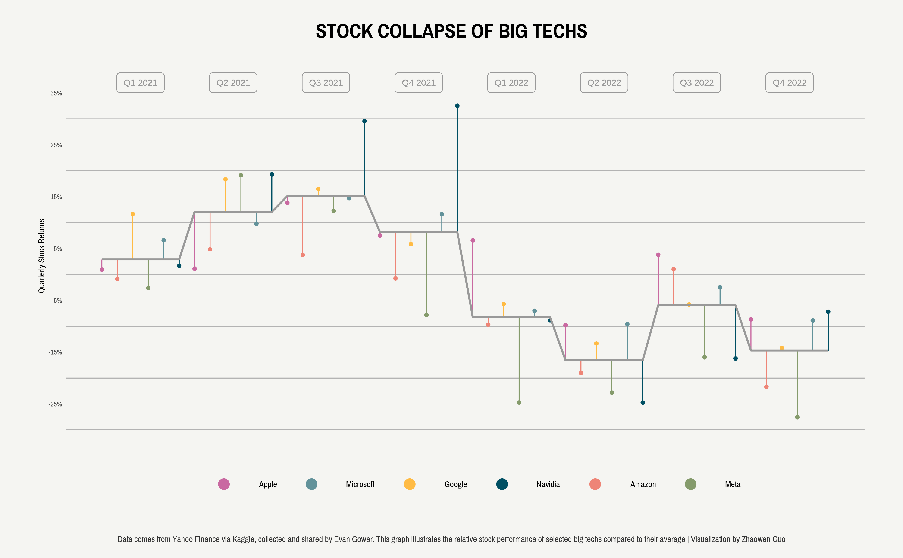
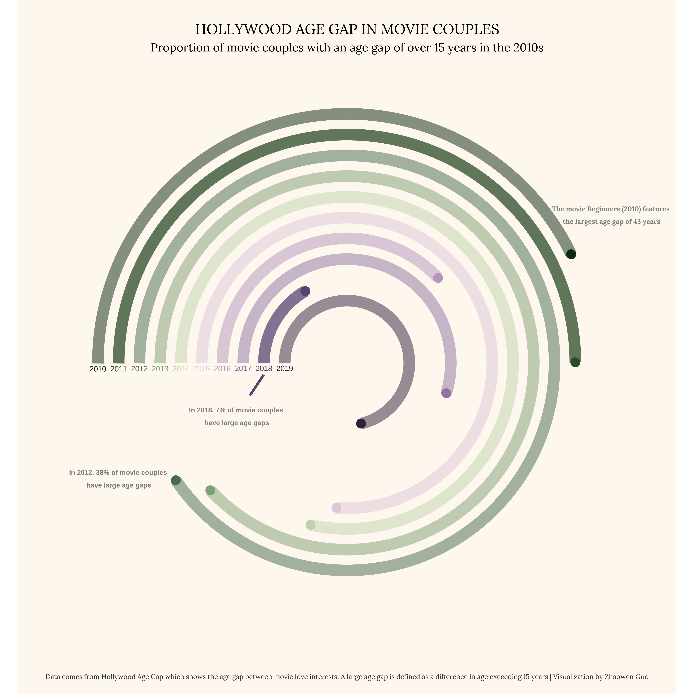
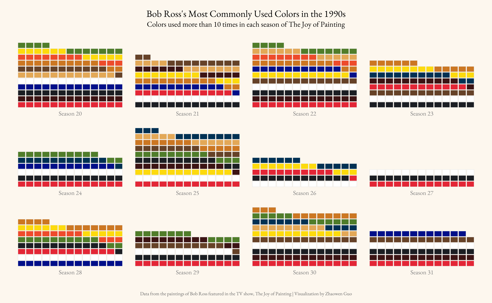
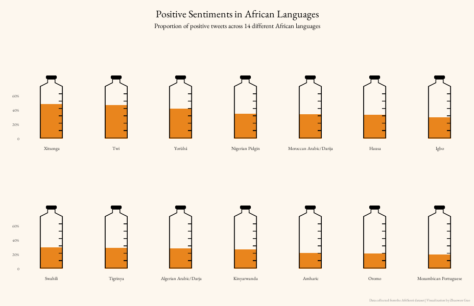
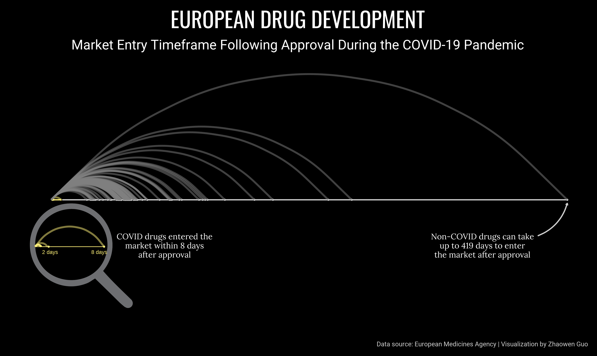
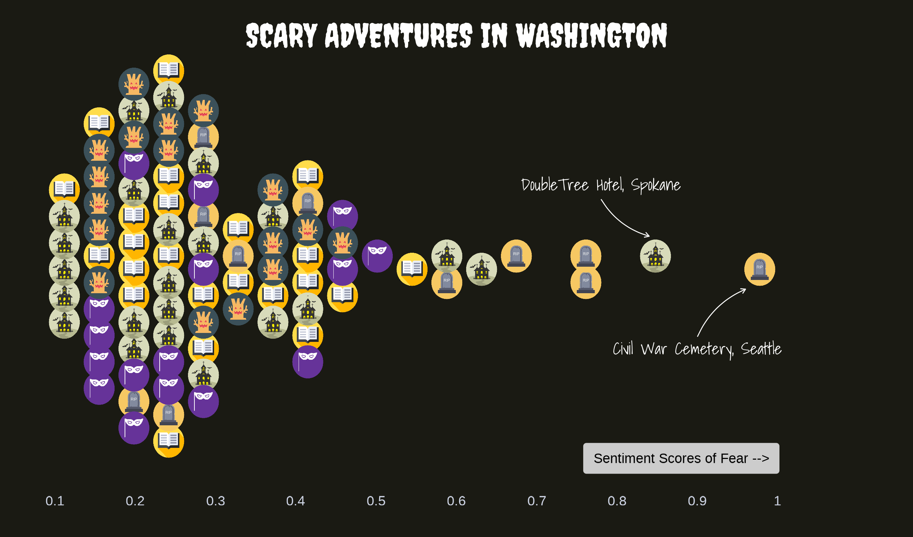

TidyTuesday is a weekly data project that encourages data enthusiasts to practice their skills in data manipulation, visualization, and analysis using R. Each week, a unique dataset is provided, allowing participants to explore a variety of topics and hone their R programming skills. Below, you’ll find a collection of my TidyTuesday visualizations, each accompanied by a brief description and a link to the corresponding code.
TidyTuesday Visualizations
Tech Company Stock Prices (02/07/2023)

Highlights:
Explored stock price trends and volatility for major tech companies.
Visualized trading volumes alongside price movements to show market activity.
The dataset focused on daily stock prices and trading volume for 14 major tech companies. Code here.
Hollywood Age Gap (02/14/2023)

Highlights:
Analyzed the age difference between male and female love interests in movies.
Visualized trends over time to show how the age gap in Hollywood has evolved.
The dataset for this week focused on the age gap between movie love interests. Code here.
Bob Ross Paintings Analysis (02/21/2023)

Highlights:
Explored the most frequently used colors in Bob Ross’s paintings from the 1990s.
Experimented with waffle charts as a new visualization technique.
The dataset for this week focuses on the paintings featured in Bob Ross’s television show, The Joy of Painting. Code here.
African Language Sentiments (02/28/2023)

Highlights:
Visualized sentiment proportions across African languages using a unique measuring cup design.
Adjusted the positioning and size of the cup to ensure accurate alignment with sentiment proportion markings.
The dataset focused on sentiment analysis in African languages. Code here.
European Drug Development Timeline (03/14/2023)

Highlights:
Analyzed the development timelines of European drugs, with a specific focus on COVID-19 treatments.
Found that COVID-19 drugs were expedited to market significantly faster than non-COVID drugs.
Enhanced the visualization with a magnifying glass icon to draw attention to this key finding.
The dataset was scraped by Miquel Anglada Girotto from the European Medicines Agency and focuses on the development of European drugs. Code here.
Haunted Places Sentiment Analysis (10/10/2023)
 Highlights:
Created a beeswarm plot to represent the distribution of fear sentiment across various haunted locations.
Discovered that the DoubleTree Hotel in Spokane and the Civil War Cemetery in Seattle have the highest fear sentiment scores.
The dataset focused on haunted locations and their associated fear sentiment scores. Using a basic sentiment analysis, I scored each location from 0 to 1, with 1 indicating intense fear sentiment. The beeswarm plot provides a fresh twist on traditional scatter plots, effectively showing the distribution of fear levels across locations. Check out the code for this project here.